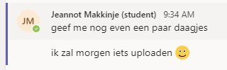

- Pijn voelen door peer reviews
- Boos worden over het streng nakijken
- Klik op 'Zet particles uit'
- Klik op 'Bekijk documentatie'
Login
- Voer een foutieve studentennummer in.
- Voer een juiste studentennummer in.
- Sla cookies op voor 1 week
- Klik op de knop die zegt 'Ik review [US09]'
Start pagina
- Klik op 'informatie'
- Klik op 'start'
- Klik op de knop die zegt 'Ik review [US06]'
Quiz
- Klik op een goed antwoord
- Klik op een fout antwoord
- Klik op 'volgende'
- Klik op 'terug'
- Klik op 'finish' bij de laatste vraag zonder vals te hebben gespeeld
- Klik op 'finish' de laatste vraag met vals te hebben gespeeld
Eind pagina
- Klik op 'top score bekijken'
- Klik op 'recente score bekijken'
- Klik op 'Tweet je score!'
- Klik op 'Join Discord!'
|
- Alles in 1x maken.
- Alles alsnog maken en creatiever worden om sommige problemen op te lossen
- Stopt de particles animatie en stopt dus het meeste lagg op de pagina
- Brengt je naar de documentatie directory
Login
- Krijg een melding met wat er precies fout is aan je nummer. Mist de s/jp, niet lang genoeg of zijn er extra letters toegevoegd?
- Er staat dat het klopt en dat je door mag gaan. Succes! (Zijn achternamen express fout gespeld?)
- Plaatst een cookie in je browser die je gegevens voor 1 week opslaat.
- Je nu inloggen zonder een studentennummer. Je score word niet opgeslagen
Start pagina
- Laat alle informatie zien over de quiz met een redelijke animatie.
- De pagina scrollt omhoog om de vragen te laten zien in de quiz.
- Als je in de quiz bent kan je niet meer terug naar de vorige vraag.
Quiz
- De button word groen, er komt een uitleg en je kan niet meer op de andere buttons klikken
- De button word rood, het goede antwoord wordt groen, er komt een uitleg en je kan niet meer op de andere buttons klikken
- Gaat naar de volgende vraag met een mooie animatie
- Gaat naar de vorige vraag met een mooie animatie
- De score wordt doorgestuurd naar de database en je word naar de laatste pagina gebracht
- De score wordt niet doorgestuurd naar de database, er worden cookies aangemaakt en je word naar de laatste pagina gebracht
Eind pagina
- Laat de hoogste score zien. Het is zelfs mogelijk om 20 punten te halen in een quiz met 10 vragen!
- Laat de meest recente score zien
- Brengt je naar twitter met een bericht die zegt hoeveel punten je hebt gehaald
- Brengt je naar een uitnodiging voor de Discord groep
|

www.youtube.com/watch?v=pmKyG3NBY_k
youtu.be/kJGcDU4esUY?t=338
www.w3schools.com
www.stackoverflow.com/questions/228835/best-practice-javascript-and-multilanguage
www.developer.twitter.com
Frontend Optimalisatie
Google lighthouse review
|